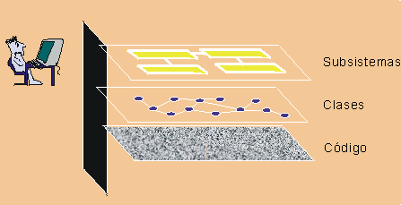

| Modelado visual |
 |
|
| Elementos relacionados |
|---|
|
 El modelado visual eleva el nivel de abstracción ¿Qué es el modelado visual??Es el uso de notaciones de diseño textuales, gráficas, semánticamente elaboradas para capturar diseños de software. Una notación, como UML, permite elevar el nivel de abstracción, al tiempo que mantiene una semántica y una sintaxis rigurosas. De esta manera, la comunicación del equipo de diseño mejora, ya que el diseño se realiza y se revisa, lo que permite al lector reflexionar sobre el diseño, y proporciona una base para la implementación libre de ambigüedades. ¿Por qué modelar?Un modelo es una vista simplificada de un sistema. Muestra los aspectos esenciales del sistema desde una perspectiva concreta y oculta los detalles no importantes. Los modelos permiten lo siguiente:
Comprender sistemas complejosLa importancia de los modelos aumenta conforme los sistemas se hacen más complejos. Por ejemplo, una perrera se puede construir sin un proyecto de diseño. Pero, si pasamos a construir casas, rascacielos, etc, es necesario realizar un proyecto. De forma similar, una pequeña aplicación construida por una persona en unos pocos días puede comprenderse con facilidad en su totalidad. Sin embargo, un sistema de comercio electrónico con miles de líneas de código fuente (SLOC) (o un sistema de control de tráfico aéreo) no lo puede comprender fácilmente una sola persona. La construcción de modelos permite al desarrollador centrarse en la imagen global, comprender cómo interactúan los componentes e identificar defectos muy graves. Algunos ejemplos de modelos son:
El modelado es importante porque ayuda al equipo a visualizar, construir y documentar la estructura y comportamiento del sistema, sin perderse en la complejidad. Examinar y comparar alternativas de diseño a un bajo costeLos modelos sencillos pueden crearse y modificarse a un bajo coste para explorar alternativas de diseño. Otros desarrolladores pueden capturar y revisar ideas innovadoras antes de invertir en un desarrollo costoso de código. Si además se aplica un desarrollo iterativo, el modelado visual ayuda a los desarrolladores a valorar cambios de diseño y a comunicar estos cambios a todo el equipo de desarrollo. Conformar una base para la implementaciónHoy en día muchos proyectos emplean lenguajes de programación orientada a objetos para obtener sistemas estables, tolerantes a los cambios y reutilizables. Para obtener estos mismos resultados, es más importante utilizar tecnología de objetos en diseño. Rational Unified Process (RUP) genera un modelo de diseño orientado a objetos que es la base para la implementación. Con la ayuda de las herramientas adecuadas, un modelo de diseño puede utilizarse para generar un conjunto inicial de código para la implementación. Esto se conoce con el nombre de "ingeniería directa" o "generación de código". Los modelos de diseño también pueden ampliarse para incluir suficiente información con la que construir el sistema. También se puede aplicar la ingeniería inversa para generar modelos de diseño a partir de implementaciones existentes. Esto puede utilizarse para evaluar implementaciones existentes. La "ingeniería directa e inversa" combina las dos técnicas de ingeniería directa y de ingeniería inversa para garantizar un diseño y código coherentes. Combinada con un proceso iterativo, las herramientas apropiadas, la ingeniería directa e inversa permite la sincronización del código y diseño durante cada iteración. Capturar requisitos de forma precisaAntes de construir un sistema, es fundamental capturar los requisitos. La especificación de los requisitos mediante un modelo preciso y sin ambigüedades ayuda a garantizar que todos los interesados puedan entender y estar de acuerdo con los requisitos. Un modelo que separe el comportamiento externo del sistema de la implementación le ayuda a centrarse en el uso previsto para el sistema, sin entretenerse con detalles de implementación. Comunicar decisiones de forma clara, sin ambigüedadesRUP utiliza el Lenguaje unificado de modelado (UML), una notación coherente que puede aplicarse para la ingeniería del sistema y para la ingeniería empresarial. Una notación estándar sirve para lo siguiente (consulte [BOO95]):
UML representa la convergencia de las recomendaciones en el modelado de software a través de la industria de la tecnología de objetos. Para obtener más información sobre el UML, visite el sitio web en http://www-306.ibm.com/software/rational/uml/. |
© Copyright IBM Corp. 1987, 2006. Reservados todos los derechos. |